00读前一分钟 · 全文脉络（做完题再看也行）
📌 文体：科技媒体的特稿——和同卷 T2 一样，作者自己不亮观点，全靠两位艺术家的话推进：前半是鲁特科夫斯基（①–⑤），后半是奥尔蒂斯（⑦⑧），中间⑥段一句话换人。两人立场一致，都站在艺术家一边——这一点直接判死 35D 的「对立观点」。
📌 结构：一条情绪线——走红（①②）→ But 问题（③）→ 惊讶→以为是好事→发现不对（④）→ 担忧（⑤）→ 反击（⑥–⑧）。三个转折信号：③❶ But · ④❷ but thought · ⑦❸ But it’s also。
📌 出题顺序：31 ①② · 32 ③ · 33 ④ · 34 ⑧ · 35 全文——⑤⑥⑦段不单独出题：⑤是④的情绪尾巴，⑥是过渡，⑦被 34D 拿去做对比（copyrighted material ↔ public domain），又被 35C 拿去当干扰项原料（privacy）。
📌 本篇最值钱的两条规律：① 时间状语卡定位（33 题 After searching online：同一段里「搜之前」的想法和「搜之后」的发现，只有后者能选）；② 人物建议题先画「主体→动作」表（34 题⑧段三个主体三件事：联盟→推政策 · AI 模型→换训练素材 · AI 公司→找合作，干扰项全是把主体对错位）。
01原文精读
🟡 黄色高亮 = 重难点词/短语，点击右侧出卡片 ｜ 蓝色虚线 = 长难句，点击跳到精析 ｜ 每段「意」= 段落意译 ｜ 选中任意其他单词浮出「查有道」 ｜ 原文由你的浏览器从原卷识别成文字（首次约 3 秒，之后秒开）；「原卷对照」可逐句看扫描原图、改识别错字
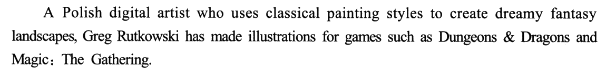
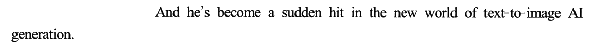
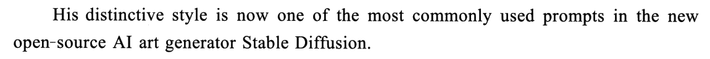
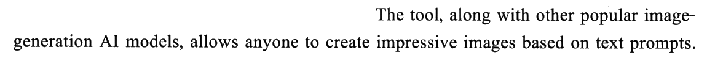
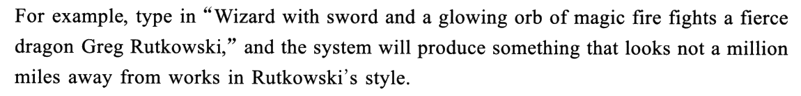
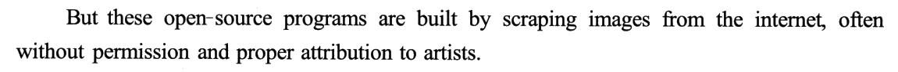
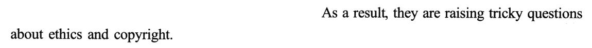
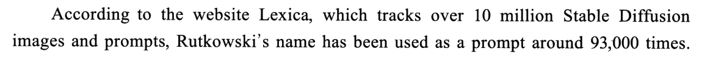
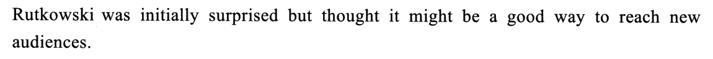
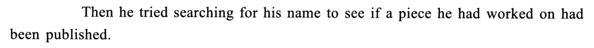
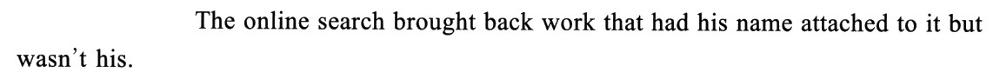
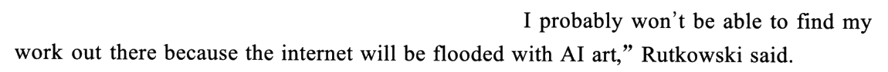
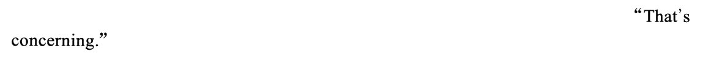
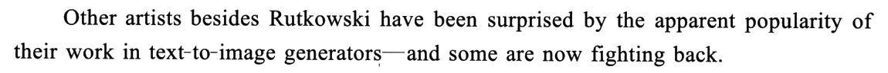
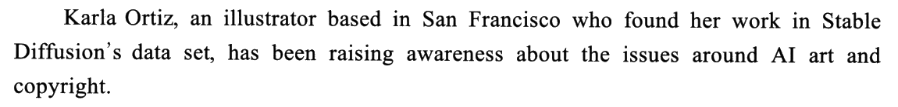
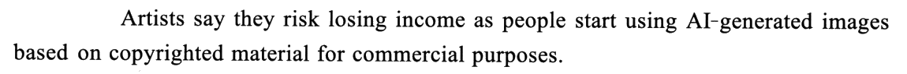
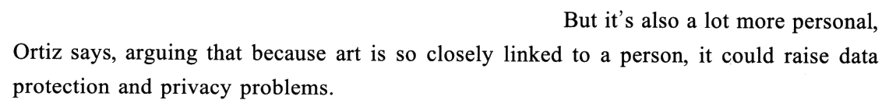
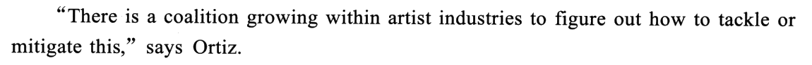
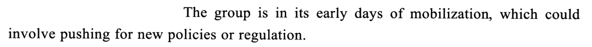
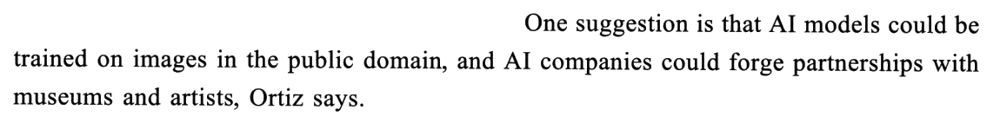
02题目与解析（点选项即判 · 再看解析）
事实细节31. What can be learned about Rutkowski from the first two paragraphs?
干扰项：A 把主体弄反了：热衷用 AI 模型的是大众用户，不是他本人——他本人③❸ have had enough、⑤❹ 觉得 concerning，态度恰恰相反。C「受同行钦佩」原文没有：①段只说他给游戏画插画、在 AI 圈走红——那是市场认可，不是 other illustrators 的评价。D 是本题最毒的一项，偷换在两处：原文是他用古典画风创作数字作品（uses classical painting styles to create 奇幻风景），选项变成「把古典画作数字化」——前者是原创，后者是把旧画扫描、修复成电子版；身份也从艺术家被换成了技术人员。
要害：前两段问「能了解到他什么」，答案要落在两段共同的核心上——①❷ 的 hit 和②段的 most commonly used 说的是同一件事。A、D 只扣个人兴趣／个人工作，C 扣同行评价，都偏离「走红」这条主线。
事实细节32. The problem with open-source AI art generators is that they ______.
干扰项：A、B 都从②❸ 取料却说反了：②❸ 恰恰说明输入一串提示词，系统就能产出和他风格相差无几的图——这是「听话」、风格高度可控，既不是 lack flexibility，也不是 unpredictable styles。D 偷换对象：未经许可「收集」的是艺术家的作品图片，不是用户信息；⑦❸ 的 privacy 说的是艺术和艺术家本人紧密相连，也跟用户数据无关。
要害：答案句（版权、伦理）越抽象，越要找它的因果上家——As a result、Therefore、So 前面那句才是可以和选项对上的具体事实。
事实细节33. After searching online, Rutkowski found ______.
干扰项：A 看着最像原文——④❷ a good way to reach new audiences，但那是他搜索之前的想法，选项把事件先后颠倒了；搜索之后他的态度反转成⑤段的担忧。B 窜改④❶：Lexica 只是「追踪」了图像和提示词，不是他找到了「识别 AI 图像的方法」。D 把③❷❸ 的版权难题、艺术家「受够了」挪了过来，可那是整个行业的问题，不是他上网搜出来的东西；原文也没写「激烈争议」。
要害：题干里的 After / Before / Initially / Then / Later 都是定位器——同一段里，时间点之前的信息全是干扰项原料。
人物观点34. According to Ortiz, AI companies are advised to ______.
① 艺术家联盟（⑧❶❷ coalition / The group）→ 可能 pushing for new policies or regulation；
② AI 模型（⑧❸ 前半）→ could be trained on images in the public domain；
③ AI 公司（⑧❸ 后半）→ could forge partnerships with museums and artists。
题干问的是给 AI 公司的建议。⑦❷ 交代了现状：AI 图像是 based on copyrighted material（基于受版权保护的素材）；⑧❸ 建议改用 public domain（公有领域、不受版权保护）的图片——从「受版权保护的素材」换成「无版权的素材」，就是换一种训练策略 ⟹ D。a different strategy 正体现 copyrighted material ↔ public domain 的对比。
干扰项：A 主体偷换——推动新政策是联盟（艺术家一方）要做的事，不是给 AI 公司的建议；campaign for ↔ pushing for 改写得很像，正是陷阱所在。B 把「和博物馆合作」改成「向公共机构提供服务」——合作关系被扭成了服务与被服务。C 把合作对象 museums and artists 换成了 AI users。
要害：人物话语里同时出现几个主体、几条建议时，干扰项几乎都是「把 A 的动作安到 B 头上」。先配对、再对题干的主体，A、C 一眼就出局。
文章主旨35. What is the text mainly about?
干扰项：B 只概括了②段（AI 让任何人都能作画），而且把全文的关注点从「AI 绘画引发的问题」偏成了「AI 起的作用」。C 的 privacy 只在⑦❸ 出现一次，是诸多后果中的一个，属细节。D 看着像「前后两半各一个人」，可两人立场一致（都反对 AI 不经许可用作品），谈不上 opposing；文章讨论的也是具体的文生图技术，而不是泛泛的 AI development。
要害：主旨题先按复现词排掉范围太宽的（C、D 说的是整个 AI），再在剩下的 A、B 里看方向：文章在讲问题与反击，不在讲 AI 的功劳。
03长难句精析（正文蓝色虚线句）
- 主干：
Greg Rutkowski has made illustrations for games——主语是逗号后面的人名。 - 句首
A Polish digital artist who uses …是前置同位语：先给身份、再报名字，新闻特稿介绍人物的标准写法。同位语里套着 who 引导的定语从句：uses classical painting styles to create dreamy fantasy landscapes——to create 是目的状语。 games such as Dungeons & Dragons and Magic: The Gathering：such as 举例，两个都是游戏名（龙与地下城 / 万智牌），别把 and 当成连接两个并列成分的普通 and。- 31D 就在这句上下手：uses classical styles to create（用古典风格创作新东西）≠ classical painting digitalization（把古典画作数字化）。
- 结构：祈使句 ＋ and ＋ 陈述句＝「只要……就……」。
type in “…”, and the system will produce something——和 Work hard, and you will succeed 同一个骨架，前半是条件。 - 引号里是一条完整的提示词：巫师持剑与魔法火球，
fights a fierce dragon，最后缀上画家的名字——名字本身就是「风格开关」，这正是全文的起因。 something that looks not a million miles away from works in Rutkowski’s style：that 引导定语从句修饰 something；not a million miles away from字面是「离……不到一百万英里」，实际意思是跟……差不多、相去不远（英式口语里的反语式夸张）。- 本句被 32A、32B 拿去造干扰项：它说的是生成器很「听话」，所以 lack flexibility、unpredictable styles 都和原文唱反调。
- 主干：
these open-source programs are built by scraping images——被动语态，by doing表方式（靠抓取图片建成）。 from the internet修饰 scraping 的来源；逗号后often without permission and proper attribution to artists是补充说明的方式状语，permission 和 attribution 共用 without 和 to artists。- 句首
But是全文第一个转折：①②段的「走红、好用」到此为止，问题登场。32 题的答案就是这半句（unauthorized ↔ without permission）。 - attribution 在这里是「署名、注明出处」——学术写作里 proper attribution 就是「规范引用」。
- 主干：
Rutkowski’s name has been used as a prompt around 93,000 times——现在完成时的被动，be used as被用作；around 是「大约」。 - 句首
According to the website Lexica交代数据来源；which tracks over 10 million … images and prompts是非限制性定语从句，介绍 Lexica 是干什么的（追踪图片和提示词）。 - track 在这里是「追踪、记录」——33B 拿这个词编出「识别 AI 图像的新方法」，其实 Lexica 只是个统计网站，和他的「发现」无关。
- 主干：
Then he tried searching for his name——try doing是「试着做一下（看看效果）」，和 try to do「努力去做」不同。 to see if …是目的状语，if 引导宾语从句（看看是否……）；从句里主语a piece he had worked on带一个省略了关系词的定语从句（he had worked on 修饰 piece），谓语是had been published。- 一句里两个过去完成时：had worked on 早于搜索、had been published 也是相对搜索那一刻而言。
- 句首
Then是 33 题的分水岭——它前面的「好办法」（④❷）是搜之前的想法，33A 正是从那里偷的料。
- 主干：
The online search brought back work——物作主语：「搜索带回了作品」＝ 搜出了作品。bring back 这里是「（搜索）返回结果」。 that had his name attached to it but wasn’t his：that 引导定语从句修饰 work，从句里两个谓语由 but 并列——had his name attached to it（have ＋ 宾语 ＋ 过去分词：名字被挂在上面）和wasn’t his（不是他的）。- 33C 的 bearing his name 是 had his name attached to it 的同义改写；bear 在这里是「带有、标着」，不是「熊」也不是「忍受」。
- 结构：两个分句由破折号 ＋ and 连接：前句
Other artists besides Rutkowski have been surprised by …，后句some are now fighting back。破折号把后一句推到重音位置——这才是本段要说的。 besides是「除……之外（还有）」——包括他；except 才是把他排除在外。Other artists besides Rutkowski ＝ 不止他一个。the apparent popularity of their work in text-to-image generators：apparent 是「明显的、看得出的」；of their work 修饰 popularity，in … generators 是范围。- 全段只有这一句：过渡段——把文章从一个人的遭遇（①–⑤）切到一群人的行动（⑦⑧），35 题「回应」的主线在这里点明。
- 主干：
Karla Ortiz … has been raising awareness about the issues——现在完成进行时，表示一直在做、还在做。 - 主谓之间夹着一长段同位语：
an illustrator based in San Francisco＋who found her work in … data set——based in 是「常驻于」（过去分词作后置定语），who 从句交代她为什么出来发声：在数据集里发现了自己的作品。读的时候先跳过两个逗号之间的部分，找到 has been raising。 the issues around AI art and copyright：around 在这里是「关于、围绕」，相当于 about / concerning。
- 主干：
But it’s also a lot more personal——it 指上句说的这件事（AI 用受保护素材）；a lot 修饰比较级，「还要私人得多」。 Ortiz says是插入的引述；arguing that …是现在分词作伴随状语，引出她的理由。- that 宾语从句里又套一个原因状语从句：
because art is so closely linked to a person（因为艺术和人联系得如此紧密），主句it could raise data protection and privacy problems。 - But 前后是递进不是对立：上一句说的是钱（丢收入），这一句加上人（隐私）。35C 只抓住了这半句的 privacy——全文就这一处，当不了主旨。
- 主干：
The group is in its early days of mobilization——The group 回指❶ 的 coalition（艺术家联盟）；in its early days 处于初期。 which could involve pushing for new policies or regulation：非限制性定语从句修饰 mobilization；involve doing涉及、包括做某事；push for 极力争取。- 本句的主语是联盟——34A 的 campaign for new policies 就是从这里搬过去、再把主语换成 AI companies 的。
- 主干：
One suggestion is that …——主系表，that 引导表语从句，从句里由 and 并列两个分句，句末Ortiz says交代出处。 - 分句一：
AI models could be trained on images in the public domain——train on 在……上训练（机器学习的固定说法）；in the public domain 处于公有领域、不受版权保护。 - 分句二：
AI companies could forge partnerships with museums and artists——forge 不是「伪造」，是「建立、缔造」（forge ties / forge a partnership）。 - 两个分句其实指向同一件事：训练数据从哪里来——要么用没有版权的图，要么跟握有作品的博物馆和艺术家合作拿授权。所以 34D「换一种训练策略」把前后两半都兜住了。
04词汇复盘（点卡片看详情）
05可搬进作文/翻译的素材
本篇话题——人工智能、版权与原创、技术的两面性、个人权益——正对大作文里的「科技与生活」「AI 与人类」「创新与保护」「网络时代的隐私」类题目，也能给小作文写「倡议书」「给平台的建议信」垫素材。英文例句都是按原文句式自拟的，只借骨架。